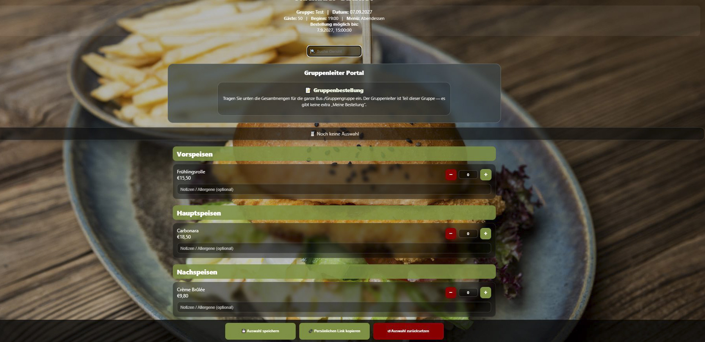
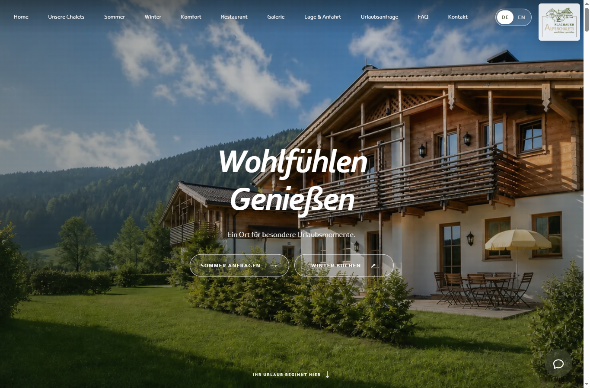
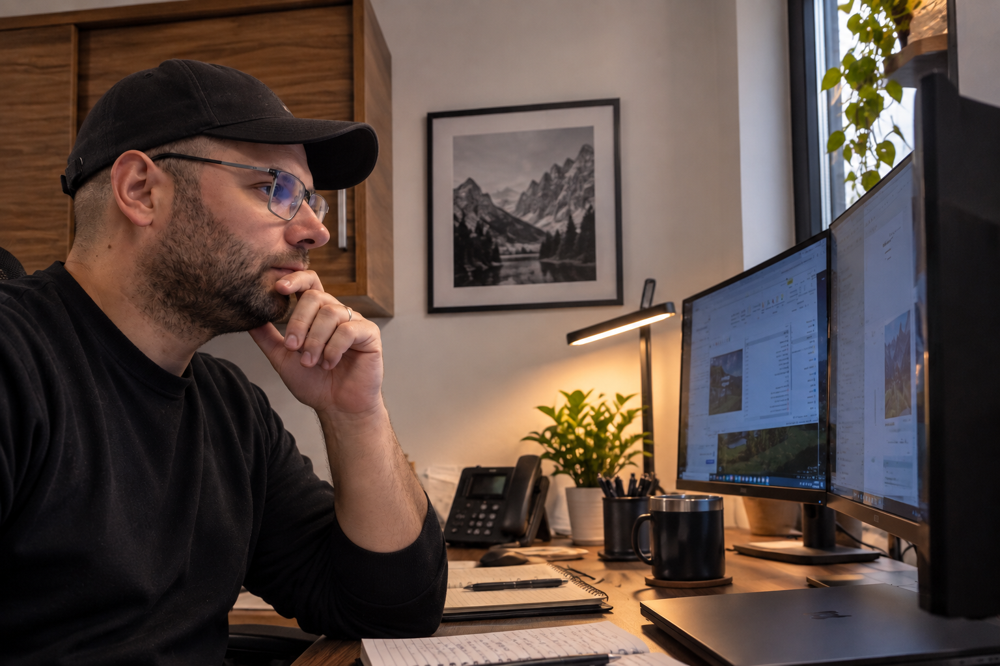

Web sajtovi
Moderni sajtovi za hotele, apartmane, restorane, zanatlije i firme.
- Više jezika
- SEO i brzina
- Kontakt i direktni upiti
WEB SAJTOVI · APLIKACIJE · POSLOVNI SISTEMI
Razvijam web sajtove, aplikacije i poslovne sisteme po meri — od prve ideje do gotovog rešenja koje pojednostavljuje rad i donosi konkretan rezultat.
One studio. Any digital solution your business needs. Designed around your workflow — not around a template.
ŠTA MOGU DA URADIM ZA VAS
Prikazane usluge su samo polazna tačka. Svako rešenje mogu da prilagodim vašoj ideji, gostima, zaposlenima i načinu rada.
Moderni sajtovi za hotele, apartmane, restorane, zanatlije i firme.
Jednostavan put od posetioca do rezervacije, porudžbine ili upita.
Aplikacije koje rade na telefonu i računaru bez komplikovane instalacije.
Evidencija i izveštaji prilagođeni načinu na koji vaša firma radi.
Ponavljajući ručni posao pretvaram u brži digitalni proces.
Sistemi koji vode artikle, automatski obračunavaju cene i pripremaju dokumente.
Brza i pregledna prodaja za restorane, prodavnice i druge uslužne delatnosti.
Aplikacije za organizaciju sobarica, apartmana i dnevnih zadataka čišćenja.
Prijava i raspodela kvarova za hotele, apartmane i poslovne objekte.
Moderne internet prodavnice koje kupcima olakšavaju pronalaženje, naručivanje i kupovinu proizvoda.
Proveravam sajtove, aplikacije i poslovne sisteme kako bi bili pouzdani, jasni i spremni za korisnike.
Pomažem sa izmenama, domenom, hostingom i daljim razvojem.
HOSPITALITY OPERATIONS
I build applications that give hotels and accommodation teams a clear daily overview — from room cleaning and inspections to faults, priorities and completed work.
STVARNI PRIMERI
Svaki projekat je nastao iz konkretnog poslovnog problema.

RESTORAN · DIGITALNO PORUČIVANJE
Gosti biraju jela preko ličnog QR linka. Restoran automatski dobija pregled porudžbina, listu za kuhinju i PDF izveštaj.

TURIZAM · WEB SAJT
Višejezični sajt koji predstavlja smeštaj i vodi gosta direktno ka rezervaciji ili upitu.
POLJOPRIVREDA · POSLOVNI SISTEM
Mobilni sistem za radnike, dnevnice, zadatke, troškove, prihode i sezonske izveštaje.
JEDNOSTAVNA SARADNJA
Uvek znate šta radimo, koliko košta i šta sledi.
Objasnite problem, cilj i sadašnji način rada.
Dobijate predlog, rok i dogovorenu cenu.
Vidite konkretan prikaz i zajedno dorađujemo detalje.
Pokrećem projekat i ostajem dostupan.

MEET PANTA
I am Miloš Pantić — most people call me Panta. I personally plan, design and develop every project, so you work directly with the person building your solution. From premium websites and booking tools to POS systems, operations, maintenance and custom automation, I turn ideas and everyday business challenges into clear, reliable digital products. I am open to new ideas, long-term partnerships and ambitious custom projects.
IDEJA, PROJEKAT ILI SARADNJA
Opišite mi svoju ideju, poslovni problem ili predlog za saradnju. Zajedno možemo da osmislimo pravo digitalno rešenje.
Pošaljite upit ↗Bez obaveze · Direktan odgovor · Jasna ponuda